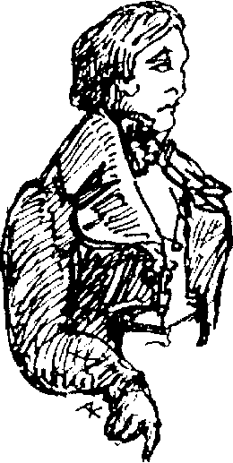
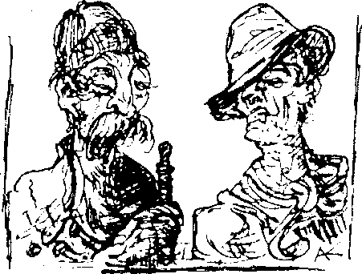

1
Herkes Philadelphialı Hercules Bell’den söz ediyordu. Bir milyoner ve liberal olan Bell, Rüya Ülkesi’ni adeta altına boğmuştu. Para birimimizin sefil hali karşısında dehşete düşmüş olmalıydı. Alfred Blumenstich’le anlaşmaya vardı ve bir süre sonra ülkenin mali işlerinin yeni bir düzene oturduğunu fark ettik. Artık kimse kâğıt para kabul etmiyordu, paslı bakır paralarla alışveriş yapmak imkânsız hale gelmişti; onlar da artık geçerli değildi. Bu reformun doğrudan bir sonucu olarak savurganlık arttı. Pearl, bir israf cinneti geçirmekteydi. Zenginler her gün ziyafetler veriyor, orta gelirlilerse barlarda sürekli içki tüketen, terli bir güruh halinde tıkınıyordu. Her yerde “Amerikalı"nın şerefine içiliyor, kadehler onun cömertliğine kalkıyordu.
Sonbahar yaklaşıyordu. İçinde bulunduğum ruhsal duruluktan memnun olduğum için kendime bir süre izin verdim. Amerikalı, karargâhını Mavi Kaz’da kurmuş, müthiş bir ücret karşılığında birinci katın tümünü kiralamıştı. Bir akşam, onu görmek üzere en şık giysilerimi giyindim ve otelin restoranına gittim. Castringius’un da Hector von Brendel ile birlikte orada olduğunu gördüm. Hemşehrim olan bu ressamın farklı bir yönünü görecektim.
Onu görmemiş olduğum aylar boyunca Castringius, Baron von Brendel ile arkadaşlığını ilerletmişti. Ressam beni görünce gözlerini devirdi, fakat şaşırtıcı bir biçimde, mesafeli ve çekingen davrandı. Selamıma kısa ve soğuk bir karşılık verdi, beni pek tanımıyormuş gibi davranarak çabucak yanımdan uzaklaştı.
“Ona neler olmuş?" diye merak ettim. “Ona asla hakaret etmedim, şimdiye kadar arkadaşlığımızın devamını isteyen de hep oydu. Birbirimizi bir süredir görmemiştik... ne kadardır? Dört ay kadar olmalı. Tuhaf."
Brendel’le karşılaştığım için çok mutlu olmuştum. Elindeki menüye dalmış, içeri girdiğimi fark etmemişti, ama beni gördüğü anda yerinden fırlayıp masasına oturmam için içten bir davette bulundu. Castringius ilk başta şaşkınlıkla kaşlarını kaldırdı, fakat durumu çabucak anladı. Kibiri kayboldu ve gemi pervanesine benzeyen elini bana uzattı. İşin aslı; Castringius, Brendel’le uzun süredir samimi olduğumdan bihaberdi ve sevgili Hector’u kendine saklamak istiyordu. Artık bunun mümkün olmadığı anlaşıldığı için durumu olduğu gibi kabul etti; ortama uyum sağlama konusunda tam bir dahiydi. Masadan kısa bir süreliğine ayrıldığı anda Brendel, her adımını kıskançlıkla izleyen bu yeni arkadaşı hakkında şikayete başladı. Tüm randevularına onunla birlikte geliyor, sonra da ısrar ediyordu, “Hoş bir bayan, el altında bulunmasında fayda var.” Brendel, ressamı bazen çöpçatan olarak kullanıyordu, ancak o konularda bile ressamın kendine has bir yöntemi vardı. “Sonsuza dek ona yapışık kalacağım,” diye iç geçirdi. “O kadar da sırnaşık bir insan ki! Ah neyse, insan yaşadıkça öğreniyor.”
“İşte size tam bir ressam," dedim gülerek.
O akşam oldukça eğlenceli geçti. Brendel’in şampanya ısmarlaması üzerine Castringius bacağıma aşağılayıcı bir fiske vurup “Buna ne demeli, bakalım?” dedi. Alkolün hiçbir türünün, beni ilgilendirmediğinden habersizdi.
Yandaki salondan gürültüler geliyordu. Konuşma ve alkışlar duyuyorduk; Amerikalı bir toplantı yapmaktaydı. “Rüya Ülkesi ’ni sonsuza dek sürecek bir düzene sokacağım,” diye ant içtiği söyleniyordu. Sonradan onu restorandan çıkarken gördüm. Onu ilk gördüğüm anki halini hiç unutmayacağım. Kapının önünde kırklı yaşlarının başında bir adam belirdi. Kısa boylu ve geniş omuzluydu. Boğa ile kartalın birleşimini andıran hatları vardı ve her yanı asimetrikti: kanca burnu yana doğru eğik duruyor, köşeli alnı ona kayıtsızlık havası veriyordu. Siyah saçları tepeye doğru seyreliyordu. Üzerinde bir frak vardı. Masamızın yanından kısa adımlarla, yaylanarak geçti. Castringius ona hürmetkarca “İyi akşamlar,” dedi ve kısa bir baş eğilmesiyle ödüllendirildi. Amerikalı, tüm restoranın ilgisini üzerine toplamıştı.
“Şu adama bakın,” diye alayla konuştu Nicholas Castringius, Amerikalı ’nın restorandan çıkmasını izlerken. “Ona ulaşmak öyle zor ki, müthiş bir serveti var. Hem Patera’nın azılı düşmanıymış, editörümüz söyledi.” Konuşurken bir yandan da bardağını dolduruyordu. Brendel yüzünde şüpheci bir gülümsemeyle bardağını Castringius’unkiyle tokuşturdu. “Pekala, öyleyse onun ve senin şerefine içelim.”

Castringius her bardakta daha da açıldı. Çingene orkestrası santurlarıyla boy gösterdiğinde avucundaki fıstıkların kabuklarını dişleriyle kırdı. Elini siyah kıvırcık saçlarına daldırıp orkestranın liderine bağırdı, “Bakın, işte aslan dişli adam." Brendel’in şaşkın bakışlarına aldırmadan konuştu, “Yakın bir dostumdur, masaya davet edeyim mi?" Brendel benim de orada olduğumu hatırlayarak karan benim vermemin gerektiğini söyledi, fakat ben kemancı çingenenin iğrenç olduğunu düşünüyordum. Sonra yeniden Amerikalı ’nın kuvvetli sesi tarafından bastırılan toplantı gürültüsünü duyduk.
Etrafa göz gezdirirken eski bir dostumu, Profesör Korntheuer'i gördüm. İpek bir yelek giymiş ve çenesini örten bir boyunbağı takmış olan bu muhteşem giyimli yaşlı beyefendi, önünde bir şişe Burgonya şarabı ile bir kameriyede oturuyordu. Ayağa kalktım ve merhaba demek için yanına gittim. Kutlama yapıyormuş gibi bir havası vardı, beni masasına davet etti. “Kısa bir süre kalacağım," dedim. “İyi bir haber mi aldınız?"
“Ah, sevgili beyim, tahmin bile edemezsiniz. Bugün harika bir gün. Onu elde ettim, o benim oldu!" Dürüst gözlerinde zevk dolu bir parlaklık vardı. “Onu on yıldır arıyordum ve sonunda buldum. Bunun benim gibi yaşlı bir adam için önemini tahmin bile edemezsiniz. Bir gençlik iksiri gibi! Bu yaşlı ve tükenmiş bedene yeniden hayat getirdi! Acarina Felicitas artık asla yanımdan ayrılmayacak."
Onu tebrik ettim. (“Son bir eğlence mi?" diye merak ettim. “Vay vay, böylesine ağırbaşlı bir beyefendiden hiç beklemezdim. Müzikholden bir kabare kızıdır herhalde? Aralarında bir iki tane hoş kız olsa gerek.")
“Peki neden onu da getirmediniz?" diye sordum, yaşlı adama acıyarak. (“Kız onu son kuruşuna kadar emecek," diye düşündüm.)
“Elbette getirdim, getirdim!" diye heyecanla bağırdı ve ceketinin cebinden gümüş rengi kâğıtla kaplı küçük bir kutu çıkardı.
“Bir fotoğraf mı? Bir madalyon mu? Bakabilir miyim?"
“Hayır. Sevgili Acarina Felicitas'ımın ta kendisi. İşte orada, köşede oturuyor."
Artık anlamıştım. Kutuda minik pis gri bir böcek, harap olmuş bir güve vardı.
Babamın evinde yaşanacak çok yerler vardır. Restorandan ayrılırken otel sahibine, yan odada verilen, böylesine alkış kopartan kararın ne olduğunu bilip bilmediğini sordum.
“Evet, size söyleyebilirim," dedi gizemli bir havada. “Bu akşam bir Lucifer Kulübü kuruldu."
Yüzü alkolün etkisiyle alev alev yanan Castringius bizi Madam Adrienne’in evine sürüklemeye çalıştı, fakat onu reddettik. “O halde birisi tek başına performans göstermek zorunda kalacak,” dedi, pardesüsünü ters çevirdi ve astarı dışarıda kasılarak uzaklaştı; son modaydı bu. Ayrılırken bize “İyi geceler, yavrucuklar, yatak zamanınızı geçirmeden eve varın," dedi.
II
Zengin Amerikalı giderek daha büyük bir ilgi odağı haline gelmekteydi. Her öğleden sonra siyah aygırının üzerinde Uzun Cadde boyunca koştururdu. Rüya Ülkesi’nin soluk yüzlü halkı bu acımasız atlının önünden kaçıp kuytu köşelere sığınırken, bizler kafede oturduğumuz yerden Amerikalı’nın yüzündeki aşağılayıcı ifadeyi görebiliyorduk. Havuza gelince atından iner, giysilerini çıkarır ve yeniden atına binip suya dalardı. At yana çekilip geriler, fakat atletik Amerikalı, hayvanı rahatlıkla kontrol ederdi. Yine bu şekilde suya daldığı bir gün kafemize geldi ve birkaç içki ısmarladı, fakat ısmarladıkları burada bulunması mümkün olmayan içkilerdi. Bu duruma sövdü, ama bir bardak rom içince sakinleşti. Şeytansı profili tam önümde duruyor, bana kendisini yakından inceleme fırsatı tanıyordu. Hakkında kafamda oluşan sonuç, “Fevkalade tehlikeli bir birey” oldu. Kısa piposu ağzının içinden fırlamış gibi duruyordu. Ayrıca şişman purolarla dolu iki koca kutusu vardı. Onlara “Propaganda puroları" derdi. Bu puroları herkese ikram ederdi; eğer birini alırsanız yarı yarıya ona ait sayılırdınız. Sonra size teorilerinden ve derneğinden bahsetmeye başlardı. Kafede de kendisine destekçiler toplamaya çalışıyordu. Kurmuş olduğu sosyal ve politik sorular derneği Lucifer Kulübü, Ses’te hoş karşılanmıştı; Resmi Gazete ise derneği görmezden geliyordu. Hepimize seslenerek dış dünyada neler olduğu hakkında bir çok şey söyledi, bir yandan da sanki yarattığı etkiyi görmek istermiş gibi sürekli etrafına bakıyordu. Söylediklerinin bir kısmını halen hatırlayabiliyorum. “Güneşe ihtiyacınız var, işte sizin sorununuz bu, sizi ahmaklar! Yaşamlarınızın harcanmasını hak ediyorsunuz. Neden hiçbir şey yapmıyorsunuz? Bana bakın, işte sizin Patera’nız hakkında düşündüğüm bu,” ve yere tükürüp alaycı bir kahkahayla masayı yumrukladı. İzleyiciler korkuyla eğildiler, böyle bir hakaretin sonucu olarak kendilerine çarpacak bir yıldırımdan korkuyor olmalıydılar. Utanç içinde gözlerini indirdiler. Kafenin sahibi aceleyle birkaç kez ıstavroz çıkardı, göğsüne vurdu ve hızla bazı dualar mırıldandı. Anton, sobanın yanına büzülüp kendi kendine fısıldadı, “Efendimiz bizi koru, Efendimiz bizi koru.” Sadece satranç oyuncuları etkilenmemiş gözüküyordu.
Konuşmasının etkisini izleyen Amerikalı yeniden yere tükürdü, tezgaha bir altın para fırlattı ve etrafındakileri küçük gören bir ifadeyle dışarı çıktı.
Amerikalı, herkesi kendi tarafına çekememiş olsa da Rüya Ülkeliler arasında politik hareketlenmeyi başlattı ve bunu yaparken herhalde istediğinden daha fazla zarar verdi. Gruplar ve organizasyonlar mantar gibi türedi. Hepsinin farklı amaçları vardı: serbest seçimler, komünizm, köle alım satımına başlamak, özgür aşk, dış ülkelerle doğrudan temas, daha katı bir tecrit, sınır kontrollerinin kaldırılması. Birbirinden farklı hareketler ortaya çıktı ve Katolikler, Yahudiler, Muhammedciler ve serbest düşünce yanlıları kendi aralarında gruplaşırken dini ihtilaflar oluştu. Pearl sakinleri politik, ticari ve entelektüel görüşlerine göre genellikle en fazla üç üyesi olan cemiyetlere bölündü.
Karınca yuvası gibi kaynayan bu kulüp bolluğu Amerikalı’nın kışkırtmaya çalıştığı faaliyet değildi. Birçok defa “Sizler işe yaramazsınız,” dediği duyulmuştu, “sizler sağduyu ve metanetten yoksun gölgelerden başka bir şey değilsiniz. Sahip olduğunuz küçük beyinlerin tamamı da hilelerle elinizden alınmış.”
Aynı sıralarda dışarıdan gelen çok sayıda göçmen de tuhaf yanlış anlaşılmalara yol açmıştı. Yeni gelenler burada kendilerinin aynılarını buldular, bu da hem komikliklere hem de rahatsızlıklara sebep oldu. Yeni Rüya Ülkeliler, buranın eski sakinlerine yalnızca görünüş ve davranış olarak değil, giyiniş olarak da benziyordu; böylece sanki yeni gelenler eskileri bilerek taklit ediyorlarmış gibi bir hava oluşuyordu. Gülünç bir durumdu. Ortalıkta dolaşan iki “Alfred Blumenstich,” iki “Brendel” ve birkaç tane “Lampenbogen" varmış gibi görünüyordu. Kafeye girip bir süredir görmediğiniz eski bir dostunuza merhaba diyor, karşılık olarak ise boş bakışlar alıyordunuz - yanlış kişi çıkıyordu. Sokakta karşıdan Lampenbogen geliyordu, şapkamı kaldırıp selamlıyordum ve sonraki köşede başka bir Lampenbogen daha çıkıyordu! Bir gün kafemizin sahibini tam dört farklı kez gördüm ve bu süre içinde kendisinin kafede olduğuna yemin edebilirim. Benim de başka bir “kendim” olmalıydı. Birçok defa omzumda samimi bir el hissettip arkamı dönünce mahçup bir özür mırıldanan hiç tanımadığım biriyle karşılaştım.
Başka bir gün başıma gelen olay beni yıktı. Huxter Geçidi diye anılan, Fransız Mahallesi’ni meyve-sebze pazarına bağlayan karanlık bir aralıkta karıma tıpatıp benzeyen bir kadına rastladım. Bu olay acı dolu hatıraları kafamda canlandırdı ve eski moda, yüksek duvarlı bir eve girip kaybolana dek kadını takip ettim. Kapının önünde, kendisini takip eden kişiyi görmek için arkasını döndü; en ufak hareketine kadar benzerliği esrarengizdi. O günden sonra onu sık sık gördüm ve kabul etmeliyim ki bazen onu görmek için özellikle fırsat kolladım. Farkında olmadan, kendime bile itiraf edemeden, yeniden aşk işaretleri görüp göremeyeceğimi merak ettim, ta ki onu gevşek şapkasının altından uzun, şık saçları görünen iriyarı bir adamla kolkola görene dek. Kafede, kadının nerede yaşadığını soruşturdum ve ünlü bir org yapımcısının karısı olduğunu öğrendim. Kendimi aptal yerine konmuş gibi hissettim. Titrek ışığıyla her şeyi eriten sonbahar yağmurunda insan fazla dikkatli olamıyordu. Sahte isim kullanan bir Castringius II, bar sahipleri gerçek Castringius’a bile inanmaya vazgeçene dek tüm barlara borçlandı.
Zevk Derneği, zengin sınıfların üyeleri tarafından eski tiyatroda yapılan büyük bir kutlamayla kurulmuştu. Kötü ünü her yere yayılmış olan Melitta da bu işte özel bir rol oynuyordu. Bir hafta boyunca her gece evden kaçmış ve müzikholdeki Yeni Havva isimli gösteride striptiz yapmıştı. Yüzü maskeli olsa da herkes onu tanımıştı. Bu skandal Lampenbogen ile Brendel’i daha da yakınlaştırdı. İkisinin de gururu incinmişti ve paylaşılan bir keder, acısı ikiye bölünmüş bir keder demekti. Brendel, Melitta’ya esir olmuştu ve ona sevgisini bir türlü gösteremiyordu. Ortalıkta boş gözler ve kırık bir kalple dolaşıyor, mahcubiyetinden ötürü benimle karşılaşmamaya özen gösteriyordu. Doymak bilmez bir şehvet düşkünü olan Melitta ise utançtan nasibini almamıştı. Amerikalı’ya körü körüne vurulmuş, adamın geniş omuzlan ve varlıklı görünüşüne kapılmıştı. Bunlar Rüya Ülkesi’nde nadiren görülen şeylerdi. Bir defasında onu Amerikalı’nın önünde, eteği dizlerinin üzerine kadar kaldırılmış halde yürürken görmüşlerdi. Sırasıyla mendilini, opera dürbününü ve para çantasını yere düşürmüştü, fakat Amerikalı nezaketten tamamıyla yoksun bir biçimde kadının küçük numaralarına cevap vermemişti. Melitta eğilip poposunu sessiz bir çağrıyla milyonere sunduğunda adam “Yolumdan çekilin, han’fendi,” demiş ve kadını kenara itmişti. Nefretle dolmuş olan Melitta da tutkularının kalın kafalı merkezini düelloya davet etmesi için Brendel’i ikna etmişti, fakat nafileydi. Amerikalı, kullanmaya alışkın olduğu tek silahın atının kırbacı olduğu haberini yollamış, olay da böylece sona ermişti.
Lucifer Kulübü'ne en fazla katılım, ülkeye yeni gelenler tarafından oluyordu. Çoğu etrafta eski moda giysilerle dolaşmaya karşı çıkıyor, tarihi mobilyalar vb. diğer demode şeylerden de memnuniyetsizlik duyuyordu. Bu insanlar Amerikalı’nın yanına geçiyorlardı.
Bazen gerçek Efendi’nin Rüya devletinin şimdiye kadarki yönetim prensiplerine böylesine açıkça karşı çıkan tüm bu hareketlere niçin göz yumup tepkisiz kaldığını merak ediyordum. Kafenin politik konularda tarafsız olan sahibi, burnuna hafifçe vurarak, “O çok kurnazdır, bekle ve gör,” demişti.
Sınır kontrolleri her zamanki gibi yoğundu, ama duvarların arkasında her şey yaklaşan bir sonun kapıda olduğunu gösteriyordu. Hava, hiç olmadığı kadar boğucu ve bunaltıcıydı. Şehrimizin üzerinde soluk bir aydınlık asılıydı. Güneş ışını huzmeleri, sert bulut örtüsünü delip birkaç kez aşağı süzülmeyi başardı. Bu nahoş, kör edici ışık esrarengizdi. Artık güneşi hiç aramıyorduk, hatta insanı ferahlatan bir sağnağı tercih bile ediyorduk.
Zaman farklı bir hızda geçiyor gibiydi. Sokaklarda endişeli ve heyacanlı insanlar toplanıyor, normalde sessiz bir yer olan Pearl’e gürültülü bir metropol görüntüsü veriyordu. Müttefikler birbirlerine aceleyle parolalar söylüyordu. Ayrıntılarda anlaşmaya varamasalar da genel olarak herkes iki ana gruptan birine katılıyordu: halen Efendimiz'e inananlar ve Amerikalı'ya kulak verenler. Yine de yüzde yüz güvenilir değillerdi ve Amerikalı da bunun farkındaydı. Propagandasına devam etti.
Mutlaka hatırlayacağınız üzere, Pearl’de iki adet günlük, bir adet de resimli haftalık gazete vardı. Resmi Gazete’nin sayfaları, ülkedeki bu yeni güce doğal olarak kapalıydı, son satırına kadar hükümete sadıktı. Amerikalı da buna karşılık olarak Ses'i etkilemek için elinden geleni ardına koymadı, sonuç olarak gazete, sorumluluğu kabul etmediklerine dair notlar bulunan ateşli makaleler yayınladı. Bizim editörümüz de bu çift taraflı savaşa katılmaya zorlanmıştı, fakat bunda pek zorlanmamış olsa gerekti. Yıllar boyunca Pearl ’de çıkan üç gazeteyi de kontrol etmiş ve üç ayrı yolu takip etmişti.
Biz iki çizerden halen her zamanki Rüya Aynası tarzında çizimler yapmamız isteniyordu, ancak Castringius çoğunlukla gizlice Amerikalı’yı öven şeyler çiziyordu. Hercules Bell’den bir mektup aldığı güne dek Amerikalı’yı resmi belgeleri ve devlet tahvillerini piposuna dolduran altın zırhlı bir dev olarak çizmişti. Mektupta yalnızca bir sözcük vardı: “Göt!"
Birden Amerikalı’nın Ses ve Rüya Aynası ’nı büyük meblağlar karşılığında satın alacağı ve kendi başına yayınlayacağı dedikoduları yayıldı. Ama o ilk olarak bildirisiyle büyük bir darbe indirdi. Onu basmak için matbaanın da sahibi olan zavallı editörümüzü bir sopalamadığı kalmıştı. Editörümüzün ilk tepkisi, “Bunu basmıyorum!” oldu. Zebani ise gülerek piposunun dumanını kanunlara ürkekçe boyun eğen vatandaşın suratına üfledi. “Derhal parlak kırmızı kağıda basacaksın” diye kükredi.
Zavallı kurbanı diz çöktü ve ağlamaya başladı, “Merhamet edin. Basamam, bu benim ölümüm olur.”
Bunun üzerine amansız Amerikalı cebinden bir altıpatlar çıkardı, silahı zavallı adamın kulağına dayadı ve haykırdı, “Eğer derhal itaat etmezsen gününü gösteririm!” Titreyen ve bir hayalet gibi bembeyaz kesilen editörümüz kağıdı aldı. “Beslemem gereken bir karım ve çocuklarım var,” diye yanaklarından yaşlar süzülerek sızlandı.
Amerikalı basımı bizzat denetledi. İşin yavaşladığını düşündüğü anlarda havaya ateş etti. Akşam olduğunda bildirinin altı bin kopyası basılmış ve kırmızı kâğıt kalmamıştı.
Halen titreyen matbaa sahibine “Pekala,” dedi, “o kadar da zor değilmiş, ha?” Her bir çalışana yüz altın kron verdi.
III
Burada kullandığım bildiri kopyası Rüya Ülkesi işgal edildiğinde orada olan ve bildiriyi kullanmama nazikçe izin veren bir Rus subay tarafından temin edildi.
BİLDİRİ
Pearl vatandaşları
Buraya geldiğimde masallardaki gibi görkemli bir şehir bulacağımı sanıyordum. Hepinizin aynı şeyi düşünmüş olduğunu tahmin ediyorum. Rüya Ülkesi’ne kabul edilmek için yedi yıl boyunca Patera’ya rica mektupları yazdım. Sonunda talebimi kabul etti. Reddinde ısrarcı davranmış olsa benim için daha iyi olurdu. Burada, saçmalıkların hüküm sürdüğü bir ülkeyle karşılaştım. Gözlerinizi açmaya karar vermiş olmam, yalnızca size duyduğum acımadan dolayıdır. Hükmünüz şimdiden verildi mi? Hayır, tekrar ediyorum, hayır! Fakat sizler rahatsızsınız, sizler mutsuzsunuz. Hepinizin bunu kabul etmesi gerekli. Bir üçkâğıtçı, bir dolandırıcı, bir hipnozcu tarafından kandırılmışsınız. Sağlığınızı, servetinizi ve aklınızı çalmış. Ey mutsuz insanlar, sizler bir toplu psikozun kurbanlarısınız. Artık hiçbiriniz kendi aklına itaat etmiyor. Başka birinin telkinlerini kafanızın içinde, kendi düşüncelerinizmiş gibi algılıyorsunuz. Ölümünüze sürüklenmeye göz yumuyorsunuz ve bunların hepsi Patera denen şeytan yüzünden oluyor.
Ama hala vakit var! Yeter ki içlerinde ufacık bir kuvvet kıvılcımı olanlar beni desteklesin.
Şimdi size söyleyeceklerime kulak verin. Silkelenmeli ve Büyü’yü üzerinizden atmalısınız. Gerçekten özgür olmak istediğiniz anda, özgür olacaksınız! Bayrağımın altında toplanın, müfrezeler oluşturun ve üç kez lanetlenmiş Saray’a saldırın! Bu vesile ile o iblisin başına bir milyon kron ödül koyuyorum.
Nasıl evlerde yaşamaya zorlandığınızı biliyor musunuz? Aralarında buraya getirilmeden önce suç, kan ve alçaklıkla bozulmamış olan bir tanesi bile zor bulunur. Saray, suikastlere ve ihtilallere sahne olmuş yerlerin enkazlarından toplanan parçalardan inşa edilmiştir. Patera, malzemelerini toplamak için gerisin geri eski zamanlara gitti. Escorial’in, Bastille’in ve Roma arenalarının parçalan kullanıldı; temsilcileri Londra Kulesi’nden, Prag’daki Hradschin’den6, Vatikan’dan ve Kremlin’den taş blokları çalıp buraya naklettiler.
Nerede ıstırap varsa Efendiniz açgözlü parmaklarını oraya uzatıyordu. Uzun Cadde’deki kafe elli yıl önce Viyana’nın kenar mahallelerinde itibarsız bir meyhane, mandıra Yukarı Bavyera’da bir haydut yatağıydı. Swabia’dan7 getirilen değirmen, kardeşin kardeşi öldürdüğü 200 yıllık bir cinayetin kanıyla kirlenmişti! Bunlar sadece birkaç küçük örnek, sizleri araştırma sonuçlarının tam listesiyle yormayacağım. Patera’nın gizemli mülklerinin çoğunun büyük şehirlerin nahoş bölgelerinden geldiğini söylemek yeterli. Paris, İstanbul vs. hep en aşağılık parçalarım verdi!
Vatandaşlar! Ben gözlerinizi açtım, onları bir daha kapamayın. Sizleri yeniden bu canavarın düşüşünü hızlandırmaya çağırıyorum. Sizlere bir öğüdüm olacak: Uyumaktan kaçının! Efendiniz sizi o zaman köle ediyor. Uyku sizi aciz bıraktığında kulağınıza sinsi fikirlerini fısıldıyor, şeytansı büyüsünü günbegün yeniliyor, güçlendiriyor ve iradenizi yok ediyor. Her birinizi yeniden mutlu ve memnun göreceğime eminim.
Sizler bataklıkta aşağı doğru çekilirken, dışarıdaki büyük dünya geleceğin aydınlığına doğru dev adımlar attı. Modern çağın görkemli keşiflerinde hiçbir payınız yok. Siz Rüya Ülkeliler etrafa düzen ve mutluluk saçan sayısız icada tamamen kapalısınız.
Vatandaşlar! Dışarı çıktığınızda hayrete düşeceksiniz. Gökyüzünün mavisi ve çayırların yeşilliğinin sizlere gülümsediğini göreceksiniz. Güneş yanaklarınıza gülleri geri getirecek. Evlatlarınızı yine bağrınıza basacak, Rüya Ülkesi’nin verimsiz pisliğine nefretle bakacaksınız. Ama gözünüzü dört açın, bu şarlatanın binlerce hilesi vardır.
Savaş çığlığınız “Patera’ya Ölüm” olsun!
Hepiniz, Lucifer’in Oğulları’na katılın!
Hercules Bell
Castringius bidirinin başına konması için bir süs çizmişti. Çizim, başında bir taç, elinde ise üzerinde Özgürlük, Eşitlik, Kardeşlik, Toplum, Bilim, Adalet sözcükleri yazılı bir tablet tutuyordu. Amerikan bayrağı taca iliştirilmiş ve bildirinin etrafına sarılmıştı.
Bildirilerin taşınması ve dağıtımı Jacques ve çetesine verilmişti. Jacques, babası belli olmayan bir delikanlıydı. Annesi Madam Adrienne, tanınmış bir genelev patronu ve Fransız Mahallesi’ndeki iki genelevden kaliteli olanının sahibiydi ve oradan hiç ayrılmamıştı. Jacques ise nerede alçak bir iş dönüyorsa altından çıkan ve darağacında sallandırılması gereken bir tipti. Bir suçlular çetesinin lideriydi ve gözüpek yiğitliklerinin ünü suçlu çevrelerde yayılmıştı. Hercules Bell bu herife ucuz bir lokantada rastlamış ve onu gelecekte yapacağı işler için cömert bir ücret karşılığında hemen kiralamıştı. Hayatını medeni bir toplumda ağza alınmayacak işler yaparak kazanan Jacques, Amerikalı ’nın zenginliğine hemencecik kapılmıştı. Daha ilk görüşmelerinde kalbini ve ruhunu Amerikalı’ya adamış, Fransız Mahallesi ’nden birkaç karanlık tiple gelip milyonerin fedailiğini yapmayı teklif etmişti.
Ancak sonradan belli oldu ki hepsi satın alınabilir tipler değildi. Mesela Gotthelf Flattich, Kamerun’da doğmuş hamal emeklisi bir zenci, teklifi kabul etmemişti. Bell onu Rüya Ülkesi’ne gelmeden önce de tanıyordu; Flattich, Amerikalı ’nın siyahi hizmetçilerinden biriyle evlenmişti_ O zamanlar Bell büyük bir para karşılığında adamın bağlılığını elde' etmişti ve Rüya Ülkesi’nde yeniden karşılaştıklarında- ikisi de pek keyiflenmişti. Zenci, boğa gibi güçlü ve yumuşak huyluydu. Yalnızca onu kızdırmamak- gerekliydi, aksi takdirde korkunç okrdu. Kansı ölünce vaktini kuşları eğitmeye adamıştı. Amerikalı- onu bir an önce saflarına almaya çalıştı, fakat planlarını dinletemedi. Flattrich, Patera’nın ateşli bir hayranıydı ve başka hiçbir şey aklını çelemezdh. İsyanda yer almadı, sakince hobileriyle ilgilenmeye devam etti. Herkesin kendisini sevdiği Fransız Mahallesi’ndeki yaşamına devam etti. Bu, anlatının ileriki kısımlarında yeniden karşımıza çıkacak.
Tüm bu sefahat ve her şeye göz yummanın sonucu olarak Rüya Ülkesi halkının dengesi bozuldu. Bilinen ruh ve sinir hastalıkları -kore hastalığı, epilepsi, isteri- artık topluca görülmeye başlamıştı. Neredeyse herkesin bir tiki ya da takıntısı vardı. Agorafobi, halüsinayson,. melankoli ve katalepsi vakalarındaki artış korkutucu boyutlardaydı; fakat insanlar gürültülü' yaşamlarına umarsızca devam ediyorlardı. İntiharlar artıp korkunçlaştıkça hayatta kalanlar da vahşileşiyordu.. Hanlarda müthiş kanlı bıçak dövüşleri oluyordu. Artık uyuyamıyordum, kafeden gelen ses yatak odamı dolduruyor ve beni bütün gece uyanık' tutuyordu. Tüm çekinmeler bir yana konmuştu, insanlar akla gelen her şeyi yapıyordu.
Bir akşam kafede bir şarkıcı belirdi. Akortsuz piyano ile alkış dışında her şey ilk başta nisbeten sakindi. Fakat sabahın üçünde çığlıklar ve tiz kahkahalar- duyulmaya başladı: Yataktan çıktım ve etrafındaki şampanya şişeleri dışında çırıl çıplak olan şarkıcı kızın sarhoş güruh tarafından bir el arabası üzerinde şehir - sokaklarında gezdirildiğini penceremden gördüm. Bu tuhaf alayın başında kılıcı kınından çıkmış olan - teğmen de Nemi ' yürümekteydi.
Eski evimin bodrum katında yaşayan annesiz dokuz çocuk artık tanınmış hayırsever Alfred Blumenstich tarafından düzenli olarak ziyaret ediliyordu. Dedikoduya göre bu . ziyaretlerin esas amacı iki büyük kızdı. Yoklan elleri şeker ve çikolata dolu kutularla geçer ve bizzat çocukların babası tarafından, Herr Blumenstich rahatsız edilmesin diye korunan kapıdan içeri girerdi.
Bazen alkol yerini etere ve afyona bırakırdı. İnsanlar yorgun sinirlerini uyarmak ya da sakinleştirmek amacıyla herkesin içinde kendilerine iğne yaparlardı.
Böylesine koşulların felaketle sonuçlanacağı aklı başında herkes için aşikârdı. Delilik sınıflarında olan bir topluluğun giderek artan rahatsız davranışlarını dehşetle izliyorlardı. Geceleri evlerden gelen anlaşılmaz, acı çığlıkları fazlasıyla rahatsız edici buluyordum. Yaşamın giderek artan ateşli temposu buraya gölgeli, rüyamsı bir hava katıyordu.
Tüm bunlara bir de sıcak, boğucu havayı ve hayaletsi aydınlığı -bazen parlak bir ışık huzmesi sülfür renkli gökyüzünde parlardı- eklerseniz o günlerde hissettiğim dehşet hakkında ufak bir fikriniz olacaktır.

Ve, tüm bunların üzerine, bildiri ortaya çıktı. Her sokağın köşesinde dağıtılıyor ve her eve yollanıyordu. Amerikalı’nın partisi ve hala Patera’yı destekleyen eski Rüya Ülkeliler arasındaki çatlağı daha da derinleştirmekten başka bir işlevi yoktu. Korkunç günlerdi.